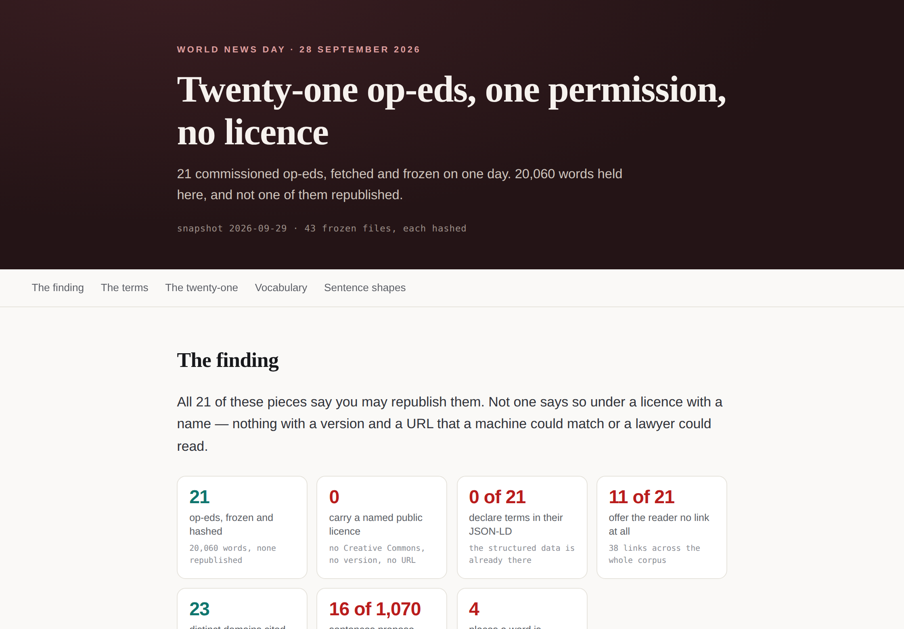
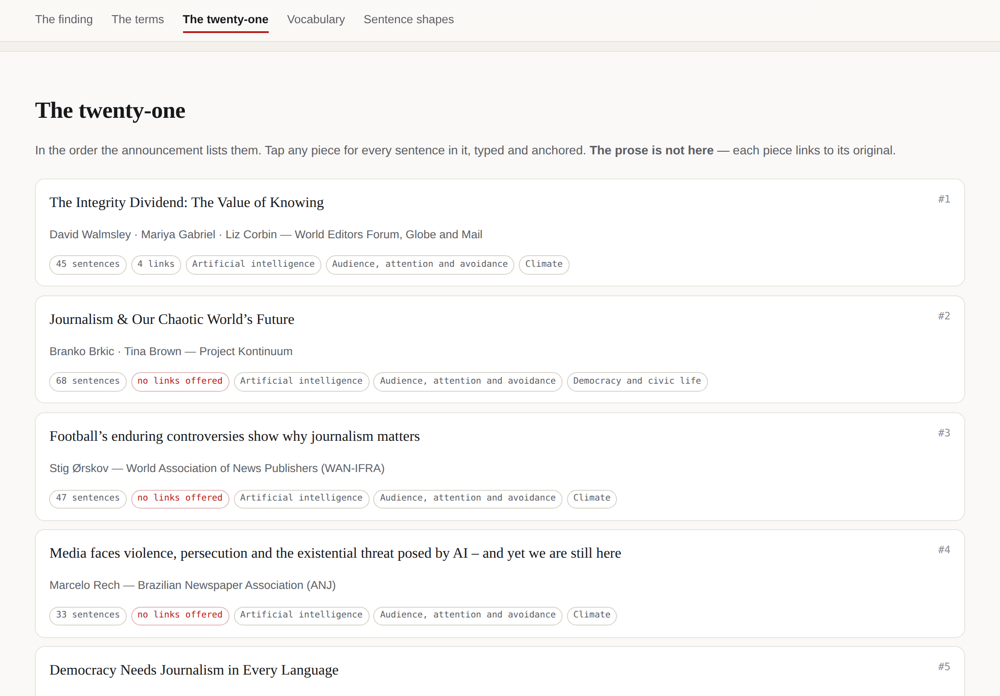
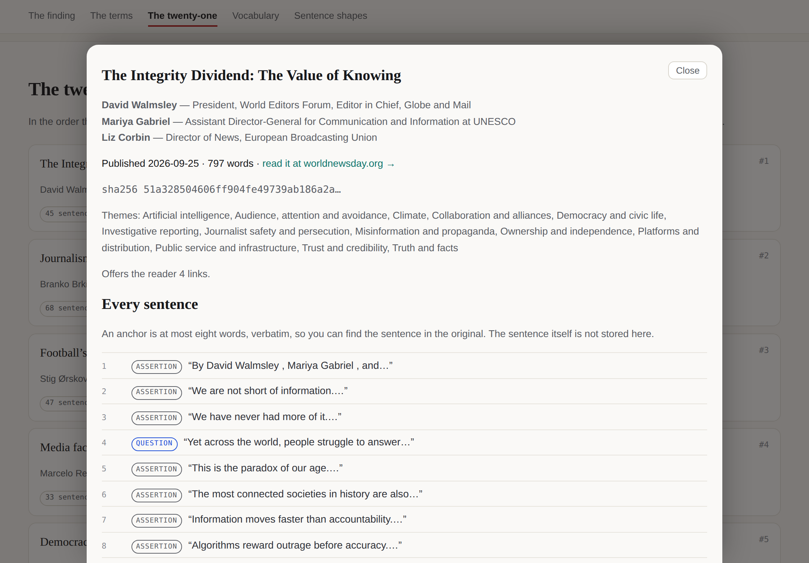
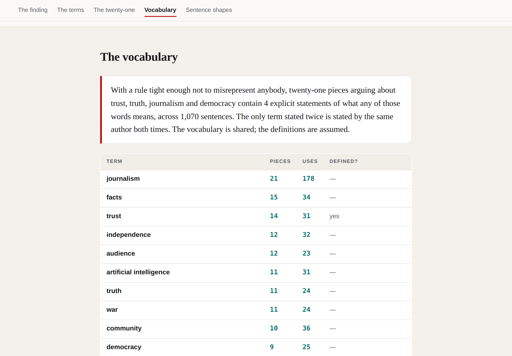
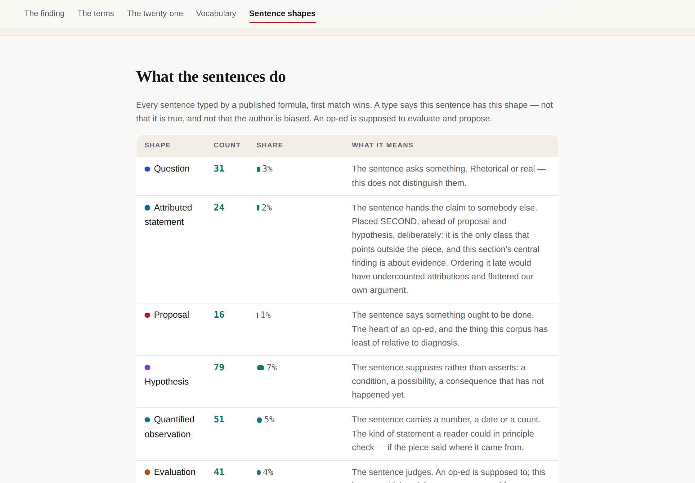

The corpusThe licenceThe 21The aggregateThe graphSourcesHow to reach themThe vaultMethod
The published vault
World News Day 2026 · the corpus
Twenty-one commissioned op-eds frozen and hashed, every derived dataset, the build code and the gate that checks it — opening as an app, and with not a word of the prose republished.
It opens as an app: the finding, the twenty-one pieces, and every sentence typed and anchored — rendered from the encrypted bytes in your own browser. Read-only, no account, nothing to install.
sgit_public_read_fa4cfb64e7b5b222a958103ed3a5dac760300053b1fd77f60c1d4408721f95e4:77yuggi1
The key is the whole credential. No account, nothing to install, and no write capability in it.
sgit_public_read_fa4cfb64e7b5b222a958103ed3a5dac760300053b1fd77f60c1d4408721f95e4:77yuggi1
In the official UI: open it read-only in a new tab → · From the CLI: sgit clone sgit_public_read_fa4cfb64e7b5b222a958103ed3a5dac760300053b1fd77f60c1d4408721f95e4:77yuggi1 · No tooling: the zip
A read key is derived one-way from the vault key and cannot become write access. The vault key is in no file in this repository and never will be.
Beta, agent-produced. The fetching, extraction, classification and drafting here are done by software agents against frozen bytes. Nothing on this page is a legal opinion, and there has been no legal review. If you are deciding whether you may republish one of these pieces, read the terms on the piece itself and ask the publisher — that is the point we are making.
We hold all twenty-one pieces and republish none of them. Every article is linked to its original on worldnewsday.org. What is published here is the description: who wrote it, under what terms, what it links to, what words it contains. The prose belongs to the people who wrote it, and the gate on this section fails the build if twelve consecutive words of any piece appear on any page we generate.
Every number walks back to bytes we hold. Each page was fetched once, frozen to a dated snapshot in this repository and hashed with SHA-256. The counts are re-derived from those bytes by a second program before anything ships. The register → · The method →
What you see when you open it
It is a vault app: a single self-contained page inside the encrypted vault, which the SG/Send host launches when the vault opens. It reads the vault's own files in your browser. There is no server, no account and no database anywhere in that sentence.





What is in it
| Path | What it holds |
|---|---|
index.html, app.json, app-data.json | The app. `app.json` carries `present: true`, so opening the vault boots the app rather than a file tree. |
data/ | The corpus described, the licence finding, the affiliations transcription, the aggregate, the published lexicons, the ontology, the graph and the same graph as N-Triples. The article prose is in none of them. |
sources/frozen/ | The twenty-one pages as served and the records the publisher's own REST API returns for them, plus the announcement — every one hashed and registered. |
build/ | Everything that produced the above, including the gate. The gate runs inside this vault: it detects the layout and names the checks it skips. |
What it demonstrates
| Mechanism | How |
|---|---|
| An app that is the distribution | The vault is the storage, the app and the share mechanism at once. Handing over the read key hands over the whole experience, and there is no server in the path. |
| No server, no account, no database | The app reads the vault's own encrypted files in the reader's browser over the `sg.vfs` bridge. An inlined fallback means it still renders saved to disk. |
| A corpus described without being republished | 20,060 words held, none reproduced. An anchor is at most eight words; the gate fails the build if twelve consecutive words of any piece appear on a generated page. |
| Counts two programs produce from the same bytes | Every licence count is derived by build/graph.py and re-derived by build/gates.py with different patterns. A number one program can produce is an assertion. |
| A vault that verifies itself | MANIFEST.json carries the SHA-256 of every file; build/gates.py re-derives every published count. Both work from a read-key clone with no repository. |
What the vault says about itself
- Agent-produced, with no human editor of record and no legal review.
- The evidence is a dated snapshot. A later capture would be a new dated folder beside it, and the difference between them would be a story.
- Our description is CC BY 4.0. The twenty-one op-eds are not ours and are not relicensed; their terms are on their own pages.
- No sentiment, stance or agreement is modelled. `agrees_with` is a banned verb.
- This section has corrected itself in public twice — once about the publisher of this corpus, once about a read key we should not have published.
The audit, honestly
What was checked, and when. On 2026-09-29, the published vault at obj-cas-imm-3fb03428749a. The credential classified as read-only, published on purpose. A clone made with that key alone — no token — was scanned file by file: 60 text files against 8 patterns (vault-key shapes, every sgit_ prefix, AWS and OpenAI key shapes, bearer tokens, private-key blocks, addresses).
14 hits, 14 cleared, 0 unexplained. Ruling a hit out is the work, so every one carries the rule that cleared it. A scanner that reports hits and no verdicts has moved the job to the reader.
Every hit, with its verdict
| File | Match | Verdict |
|---|---|---|
build/contacts.py | anj@anj.org.br | published on purpose: an organisation's role address, cleared by the rule in data/contact-rules.json |
build/gates.py | anj@anj.org.br | published on purpose: an organisation's role address, cleared by the rule in data/contact-rules.json |
data/contact-rules.json | anj@anj.org.br | published on purpose: an organisation's role address, cleared by the rule in data/contact-rules.json |
data/contacts.json | anj@anj.org.br | published on purpose: an organisation's role address, cleared by the rule in data/contact-rules.json |
data/contacts.json | desk@myparaluman.com | published on purpose: an organisation's role address, cleared by the rule in data/contact-rules.json |
data/contacts.json | desk@myparaluman.ph | published on purpose: an organisation's role address, cleared by the rule in data/contact-rules.json |
data/contacts.json | editor@thequint.com | published on purpose: an organisation's role address, cleared by the rule in data/contact-rules.json |
data/contacts.json | editor@thequint.com | published on purpose: an organisation's role address, cleared by the rule in data/contact-rules.json |
data/contacts.json | info@haitiantimes.com | published on purpose: an organisation's role address, cleared by the rule in data/contact-rules.json |
data/contacts.json | submissions@haitiantimes.com | published on purpose: an organisation's role address, cleared by the rule in data/contact-rules.json |
data/contacts.json | info@reportlocal.org | published on purpose: an organisation's role address, cleared by the rule in data/contact-rules.json |
data/contacts.json | info@confidencial.digital | published on purpose: an organisation's role address, cleared by the rule in data/contact-rules.json |
data/contacts.json | editors@coveringclimatenow.org | published on purpose: an organisation's role address, cleared by the rule in data/contact-rules.json |
data/contacts.json | prensa@vocento.com | published on purpose: an organisation's role address, cleared by the rule in data/contact-rules.json |
The negative control. The same clone attempted with an all-zeros read key fails, as it must. A wrong key cannot even find the vault index, because the index address is derived from the key.
Derived facts
From a read-key clone, read-only, no token, no repository — because the repository is not what was published:
- Files: 116 · plaintext size: 7.76 MB
- Commits: 5 · HEAD:
obj-cas-imm-3fb03428749a - Top level:
MANIFEST.json,PACKAGE.sh,README.md,app-data.json,app.json,build/,data/,index.html,licence.json,sources/ - Opens as an app: yes —
app.jsonwithpresent: true, entryindex.html
Notes
Where this sits. In the same convention as sgit.ai’s published vaults, whose method this follows. Write-key status: held outside this repository and escrowed nowhere it can be published. A vault whose write key is lost is frozen — readable forever, never correctable — so that is worth stating where a reader will see it.
For an agent
The machine surface is ../data/vault.json for the credential and ../data/vault-audit.json for the audit and derived facts, both produced by build/vault_audit.py from the published read key alone. Inside the vault, app-data.json is the app’s own compact projection of the corpus. The key on this page grants read and only read.